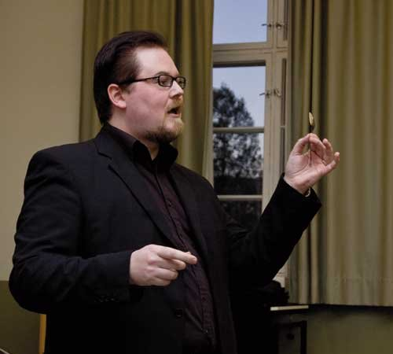

Mentalisti Pete Poskiparta paljasti Skepsiksen tilaisuudessa lokakuussa Tampereella, kuinka yksinkertaiset temput ovat huijanneet jopa tiedemiehiä uskomaan yliluonnolliseen. Vanhan kirjastotalon luentosali pakkautui miltei täyteen. Oli hienoa nähdä, että paikalle saapui myös paljon nuorta väkeä. Luento oli luonteeltaan interaktiivinen: yleisö kyseli Poskiparralta hyviä kysymyksiä aiheeseen liittyen.
Mentalisti/taikuri Poskiparta omaa kymmenen vuoden ammattikokemuksen taikuuden tekemisestä ja ihmisten huijaamisesta. Lisäksi hän on kiinnostunut psyykkisistä huijareista kuten Uri Geller, Sylvia Brown ja Peter Popoff, joten taustaa ja näkemystä luennointiin riitti. Poskiparta kertoi psyykkisistä huijauksista erityisesti henkilöiden kautta. Edellä mainittujen nimien lisäksi tarinoissa vilahtelivat muun muassa James Randi sekä amerikkalaiset psyykikko James Hydrick ja mentalisti Banachek. Lukuisat anekdootit ja demonstraatiot pitivät luennon mielenkiintoisana ja haastoivat ajattelemaan.
Poskiparta muun muassa demonstroi, kuinka Uri Geller lusikoita taivuttamalla huijasi miltei koko maailman uskomaan psykokineettisiin kykyihinsä. Taitavasti toteutetut psykokinesiademonstraatiot huijasivat myös Tampereen yleisöä. Selvästikään suuri osa porukasta ei havainnut yksinkertaisia metodeja temppujen takana, vaikkei niitä liiemmin piiloteltu. Geller-demo oli siis kaiken kaikkiaan autenttinen.
Poskiparta paljasti myös erään ajatusten lukemisen metodin, jonka pirullinen yksinkertaisuus oli jo viihdearvoltaan luennolla käynnin arvoista.
Pete Poskiparta, miten sinusta tuli taikuri?
– Olin 10–11 -vuotias. Näin lastenohjelmassa, kun samanikäinen taikurinalku muutti muovisen kananmunan oikeaksi munaksi. Temppu teki suuren vaikutuksen, ja muistan vielä aidosti, kuinka saman tien ohjelman jälkeen lähdin kirjastoon etsimään sen salaisuutta.
– Luin, opettelin temppuja ja yritin löytää ratkaisua siihen, miten muna muuttui oikeaksi. Vastausta ei koskaan kirjoista löytynyt, mutta lukiessani olin oppinut jo paljon, ja melko nopeasti alkoivat ensimmäiset esitykseni.
– Runsas kymmenen vuotta sitten harrastus muuttui ammatiksi. Se oli tietoinen päätös, ei niin kään ajautuminen uralle. Päätin kokeilla, onnistunko. Se oli tähänastisen elämäni parhaita päätöksiä – toisin sanoen hyvin onnistuin.
Kuinka kiinnostuit juuri mentalismista, ja miten taikuus ja mentalismi eroavat toisistaan?
– Mentalismi alkoi kiinnostaa minua 2000-luvun alkupuolella. Sitä ennen mentalismi ja mentaalitaikuus olivat olleet vain yksi taikuuden tyylisuunta, josta kyllä tiesin perusasioita, mutta josta en ollut sen enempää kiinnostunut. Lopullinen käännös tapahtui Richard Osterlindin julkaistua DVD-sarjan ”Mind Mysteries 1–4”. Olin lumoutunut, miten mentalismistakin voi tehdä niin viihdyttävää ja vauhdikasta. Osterlindiin oli helppo samaistua, enkä tarkoita tällä kopiointia. Yleisesti, hän vain oli tavallisen näköinen ja oloinen henkilö, jolla tuntui olevan uskomaton kyky lukea ihmisiä ja vaikuttaa heihin.
– Aluksi lisäsin mentaalitaikuutta ja mentalismia ohjelmaani pieninä palasina. Lähes poikkeuksetta yleisö kuitenkin tuli esityksen jälkeen kysymään ja kommentoimaan juuri näitä osuuksia. Tuntui, että olin osunut oikeaan suoneen. Melko pian aloin saada keikkakyselyitä, joissa varmistettiin, että ”onhan esityksessäsi mukana se numero, jossa silmät sidottuna tunnistat esineitä?” Niin sanottu perinteinen taikuus väheni ohjelmassani ja mentalismi lisääntyi. Nykyään pääosa esityksistäni on menta lismia, mutta taikuus on edelleen tarvittaessa osa ohjelmaani.
– Henkilökohtaisesti ajattelen, että mentalismi on yksi taikuuden tyylisuunta siinä kuin manipulaatio tai illuusiotkin. Mentalistihan on henkilö, joka luo illuusion siitä, että kykenee lukemaan ajatuksia tai omaa kyvyn tietää asioita ennalta. Manipulaattori taas luo illuusion, että kykenee ilmestyttämään ja kadottamaan tavaroita ilmaan. Katsojan kannalta ero on siinä, että mentalismi on taikuuden tyylisuunta, jonka katsoja saattaa hyväksyä todeksi. Jokainen tietää, että ihminen ei kykene leijumaan, ei kadottamaan esineitä eikä korjaamaan katkaistua narua puhaltamalla. Sen sijaan aika moni on valmis uskomaan, että ajatuksia voi lukea ja tulevaisuutta ennustaa. Vielä useampi on valmis uskomaan, että ihmistä voi lukea ja ohjailla – ja sehän onkin totta.
– Tästä syystä mentalistin esitys eroaa usein taikaesityksestä ihan normaalin katsojankin silmissä. Mentalisti ei väitä omaavansa yliluonnollisia kykyjä, vaan kaikki on harjoiteltavissa. Henkilökohtaisesti kuulun kuitenkin enemmän näihin vanhan koulukunnan mentalisteihin, jotka eivät raota salaisuuden verhoa liikaa, vaan jättävät katsojien päätettäväksi, oliko nähty totta, tarua vai jotakin siltä väliltä. Uuden ajan mentalistit usein selittävät tekemänsä kertomalla NLP-tekniikasta, ihmisten ohjailusta ja muusta. Minulle tämä tyyli ei sovi, koska sen kautta katoaa merkittävä osa esityksen salaperäisyyttä, mystiikkaa.
Mitä annettavaa taikureilla on skeptismille?
– Taikureilla on paljonkin annettavaa, koska juuri he tietävät miten ihmismieltä ja ihmissilmää huijataan. Tämän totuuden myöntäminen on ollut usein liikaa vaadittu monelta tiedemieheltäkin. Tästä syystä Uri Geller ja monet häntä seuranneet huijarit onnistuivat tekemään itsestään maailmantähtiä ja kuluttamaan erilaisten tutkijoiden aikaa ja rahaa. Kaikelta olisi säästytty, jos joku olisi vain kysynyt taikureilta: ”Hei, osaatteko sanoa, miten tämä on mahdollista?” Vastaus olisi ollut: ”Kyllä, me osaamme.”
Mikä on suhteesi skeptismiin?
– Olen sanan varsinaisessa merkityksessä epäilijä. Epäilen vahvasti, että kukaan ihminen omaisi yliluonnollisia kykyjä, olisi ollut kontaktissa muuhun sivilisaatioon, näkisi tulevaisuuteen tai kykenisi tuottamaan muun yliluonnollisen ilmiön. Olen innokas asian harrastaja juuri taikurin näkökulmasta. Siksi minua kiinnostaa nimenomaan nämä härskit huijarit, jotka kertovat parantavansa koskettamalla, juttelevansa kuolleille tai ennustavansa tulevaisuutta.
Miten ihmiset suhtautuvat keikoillasi mentalismitaikuuteesi, jossa luetaan ajatuksia ja tehdään psykokineettisiä ilmiöitä? Uskovatko ihmiset sinun omaavan aitoja yliluonnollisia kykyjä?
– Ihmiset uskovat yllättävän usein, että minulla on yliluonnollisia kykyjä, vaikka sanon aina esityksen alussa, että kaikki, mitä näette, on ainoastaan pitkän harjoittelun tulosta. Siitä huolimatta joudun tuon tuostakin vielä esityksen jälkeen kertomaan joillekin kiinnostuneille, että ”ihan totta, en oikeasti näe tulevaisuuteen, enkä todellakaan tiedä, mitä juuri nyt ajattelet”. Suurempi joukko on heitä, jotka uskovat minun käyttävän psykologisia keinoja ja hyvää ihmistuntemusta, ja itse asiassa he ovat osittain oikeassa. Kollega Max Maven on sanonut erittäin osuvasti omasta mentalistin työstään: ”Ne, jotka luulevat kaiken näkemänsä todeksi, ovat väärässä. Ne, jotka luulevat kaiken näkemänsä vain tempuiksi, ovat myöskin väärässä. Se, mitä teen, on jossain näiden kahden välissä. Missä kohtaa? Se ei liene minun päätettävissäni.”
Kohtaatko keikoilla paljon yliluonnolliseen uskovia, jotka haluavat jakaa kokemuksiaan kanssasi?
– Kohtaan, mutta en onneksi kovin paljon. Kuuntelen sujuvasti, mutta keikkapaikalla olen töissä, joten se ei ole paikka, jossa minun omasta mielestäni kuuluu sanoa suoraan, että ”ikävä tuottaa pettymys, mutta isoäitisi ei ollut selvänäkijä”, ellei sitten minulta suoraan kysytä mielipidettä.
Onko viihdyttäjän vastuu vakuuttaa yleisölle, ettei hän omaa yliluonnollisia kykyjä?
– Ei! Viihdyttäjä, esiintyjä, näyttelijä, showmies… Näiden kaikkien pitäisi itsessään jo kertoa yleisölle, mistä on kyse. Avainsana on minulla juuri termi ”esiintyjä”. Koska olen esiintyjä, voin kertoa ja esittää asioita, jotka eivät ole totta. Jos teatteriesityksessä joku kuolee, kukaan ei nouse lavalla ylös ja sano: ”Hei, emme kuolleet oikeasti, vaan tämä on näytelmä.” Katsojat tajuavat sen itse. Ero on juuri tässä. Jos olen lavalla viihdyttäjänä, saan vapaat kädet toimia. Mutta jos soittaisin jonkun ovikelloa ja kertoisin, että ”kun maksat 200 euroa, otan yhteyttä kuolleeseen isoisääsi”, niin silloin moraalinen ja eettinen raja on komeasti ylitetty.
Skepsis järjestää ilmeisesti myös Helsingissä ja Turussa luentosi. Millaisena koit luennoinnin tällaisesta aiheesta?
– Erittäin mielenkiintoisena. Yleisön reagoinnista huomasi, että he itsekin olivat monesti yllättyneitä, miten yksinkertaisista jutuista lopulta on kyse, kun puhutaan vaikka siitä, miten Uri Geller luki ajatuksia tai miten James Hydrick muka ajatuksen voimalla käänsi puhelinluettelon sivua. Omalta osaltani ennakkovalmistelut ovat mielenkiintoisia, koska joudun ennen luentoa miettimään tarkasti, mitä haluan paljastaa ja miksi.
– Taikurina olen edelleen vahvasti sillä kannalla, että temppujen ja salaisuuksien paljastaminen vain paljastamisen ilosta ei ole kovin hedelmällistä. Sen sijaan, kun puhutaan vaikka Gelleristä, niin on ihan perusteltuakin näyttää osa hänen metodeistaan, koska se lienee huomattavasti vakuuttavampaa kuin, että vain kertoisin hänen olleen huijari.
Sinut tunnetaan Suomen taikuripiireissä ajattelijana ja kritiikin esittäjänä. Mille tahoille antaisit tänä vuonna Skepsiksen Huuhaa- ja Sokrates-palkinnot?
– Huuhaa palkinnon saajista tuskin on pulaa. Sen voisi antaa monellekin TV-kanavalle niillä esitettyjen ”dokumenttien” perusteella. Tuorein taisi olla sähköyliherkkyydestä kertova dokumentti, jossa täysin yksipuolisesti kerrottiin sairaudesta, jonka olemassaolosta ei ole olemassa mitään tieteellistä näyttöä. Huuhaa- palkinto olisi ehkä syytä antaa Auli Mantilalle, joka oli kyseisen dokumentin tuottaja.
Sokrates-palkinnon antaisin ehdottomasti psykiatri Hannu Lauermalle. Hän on useissa yhteyksissä ja selkeällä tavalla kertonut, miten ihmismieltä on helppo manipuloida ja miten kritiikittömästi tähän suhtaudutaan.
Teksti ja kuvat: Jose Ahonen